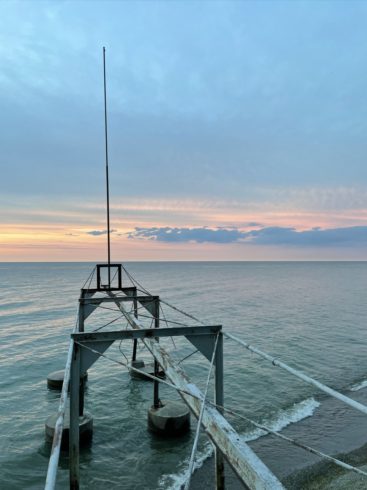

Hi! My name is Veda and I am a first year PhD student in environment and resources at the Stanford Doerr School of Sustainability. I am interested in leveraging remote sensing and machine learning tools to develop community-centered tools for climate change adaptation. My work focuses on minimizing harm to frontline communities, leveraging principles of mutual aid and insights from large-scale spatial data to plan for escalating climate extremes effectively. I love traveling, running, and playing basketball; here you can find a select set of publications, as well as some photography from the past few years.
Photography
Shimanami Kaido, Japan, December 2024Casa Luis Barragán, Mexico City, Mexico, January 2022My Grandfather's House, Hyderabad, India, July 2022Mexico City, Mexico, January 2022Ahupua'a 'O Kahana State Park, Hawai'i, December 2022

Madison, Ohio, July 2022Miyajima, Japan, December 2024Naples, Italy, January 2023Ocoa, Dominican Republic, March 2024Pinnacles National Park, California, April 2025Mount Takao, Japan, December 2024Brooklyn, New York, August 2023
Publications
J Frame, T Nair, V Sunkara, et. al. (Geophysical Research Letters 2024).
Rapid Inundation Mapping Using the US National Water Model, Satellite Observations, and a Convolutional Neural Network [Link to Paper]
P Popien, O D'Hondt, V Sunkara, S Chakrabarti (IGARSS 2023, Paper Track).
Deep Learning Based Urban Flood Mapping from High Resolution Capella Space SAR Imagery [Link to Paper]
T Nair, V Sunkara, J Frame, et. al. (NeurIPS Climate Change AI 2022).
Deep Hydrology: Hourly, Gap-Free Flood Maps Through Joint Satellite and Hydrologic Modelling [Link to Paper]
V Sunkara, N Leach, S Ganju (NeurIPS Climate Change AI 2021).
Memory to Map: Improving Radar Flood Maps with Temporal Context and Semantic Segmentation [Link to Paper]
V Sunkara, M Purri, BL Saux, J Adams (NeurIPS Climate Change AI 2020).
Street to Cloud: Improving Flood Maps with Crowdsourcing and Semantic Segmentation [Link to Paper]
Conference Presentations and Posters
V Sunkara, J Frame, T Nair, P Popien, (Keynote for HydroML 2022 at Penn State University).
Leveraging Deep Learning to Generate Hourly Flood Extent Maps Using Hydraulic and Hydrologic States
N Leach, V Sunkara, P Popien, C Doyle (AGU 2022).
Daily Flood Mapping Using U-Nets for MODIS and VIIRS
JM Frame, V Sunkara, T Nair, et. al. (AGU 2022).
Flood maps across CONUS using the US National Water Model, satellite observations and convolutional neural networks
JM Frame, V Sunkara, S Chakrabarti, et. al. (Frontiers in Hydrology 2022).
Intelligent flood maps: combining satellite observations with hydrologic modeling for high temporal resolution flood maps
P Popien, V Sunkara, N Leach, B Tellman (AGU 2021).
Cost-Effective Global Flood Segmentation using Convolutional Neural Networks, Sentinel-1 and Active Learning
S Chakrabarti, P Popien, V Sunkara, et. al. (AGU 2021).
Understanding the dynamics of flood inundation extent through fusion of satellite based passive microwave, active microwave and optical imagery
O Levari, V Sunkara, C Erickson, et. al. (AGU 2021).
Using Managed Apache Beam Pipelines with Geospatial Open-Source Standards to Scale Up Convolutional Network Deployment for Flood Mapping and Improved Disaster Response
B Tellman, V Sunkara, T Anderson, et. al. (AGU 2020).
Leveraging machine learning to improve satellite flood detection: seeing through (thin) clouds and identifying features
V Sunkara, C Doyle, H Kim et. al. (AGU 2020).
Leveraging Soil Moisture for Early Flood Detection